willnew
팀 누구나 채널이나 스레드에 한 줄로 맡기면 AI가 고치고, 테스트 관문과 요청자의 시각적 전후 비교를 거쳐 개발자에게 승인 요청으로 올라오는 팀 도구. 승인 시 PR → CI → 배포까지 자동 추적되고, 요청자에게 쉬운 말로 답이 갑니다
| 결과 | 맡기기부터 병합까지 약 47초 (실제 Claude Code, 1건). 요청 3건 중 2건 병합, 검증 실패 1건은 승인 차단. 스레드 협업 및 Playwright 전후 시각 비교 지원 (테스트 94개 통과) |
|---|---|
| 기술 | TypeScript · React · Hono · Playwright · vitest |
| 코드 | 검증 관문 · 시각적 전후 비교 · 스레드 채팅 · PR → CI → 배포 · 요청자 답장 · E2E 테스트 · 측정 근거 · 저장소 |
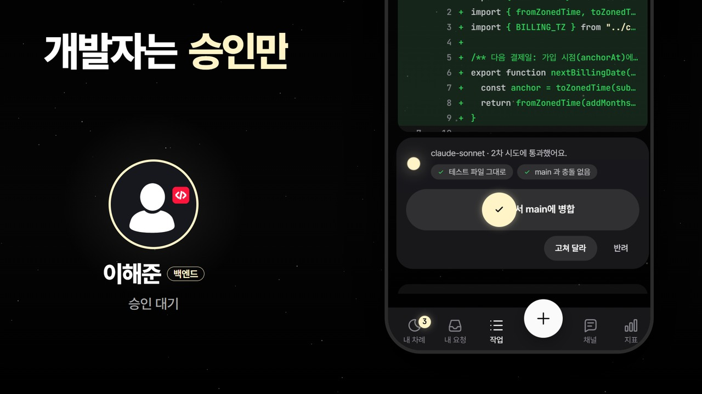
기능
예시: 고객 문의 "1/31 가입자 다음 결제일이 3/3으로 잡혀 있대요. 2월은 말일(2/28)에, 3월엔 다시 31일이어야 하는 거 맞죠?". 인물은 가상이고 화면은 데모 모드에서 촬영
-
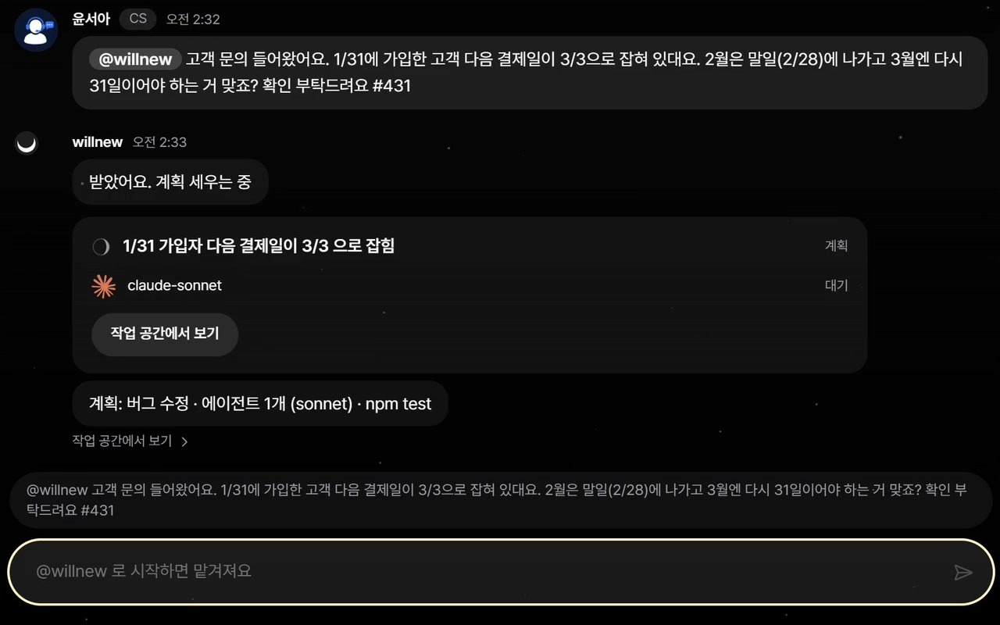
1누구나 채널에 맡기기 (스레드 분리)
CS 담당자가 채널에 고객 문의를 올리면 독립된 카드 스레드가 생성됨. 계획 에이전트가 '버그 수정, 에이전트 1개, npm test로 확인'으로 정리
-
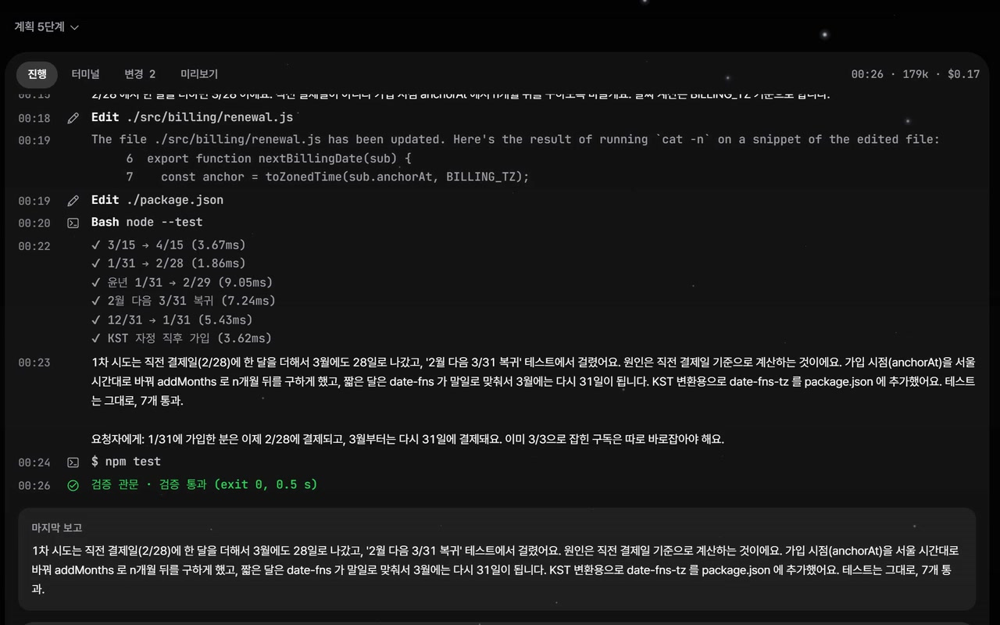
2테스트가 판정, 실패하면 한 번 더
willnew가 npm test를 직접 돌려 종료 코드로 판정. 첫 시도는 '2월 다음 3/31 복귀' 테스트에서 실패 → 실패 로그를 붙여 재작업 → 7개 통과
-
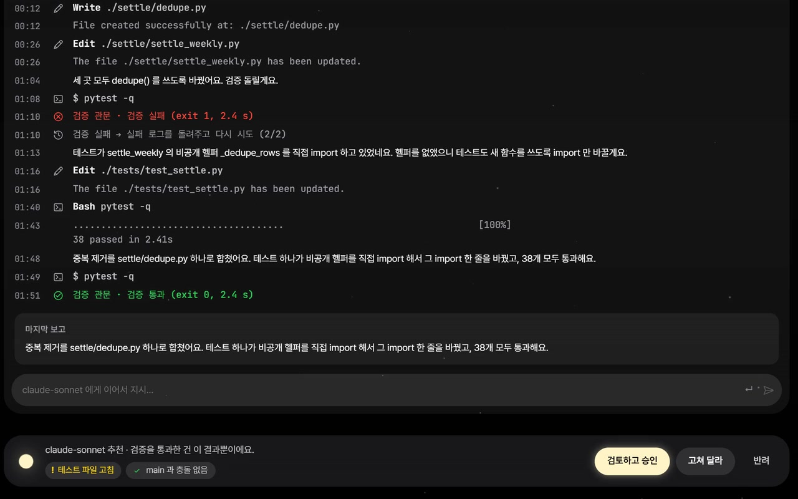
3테스트를 고친 결과는 차단
테스트 파일을 고쳐서 통과한 결과는 '테스트 파일 고침'으로 표시하고, 바로 승인하지 못하게 검토 화면으로 보냄
-
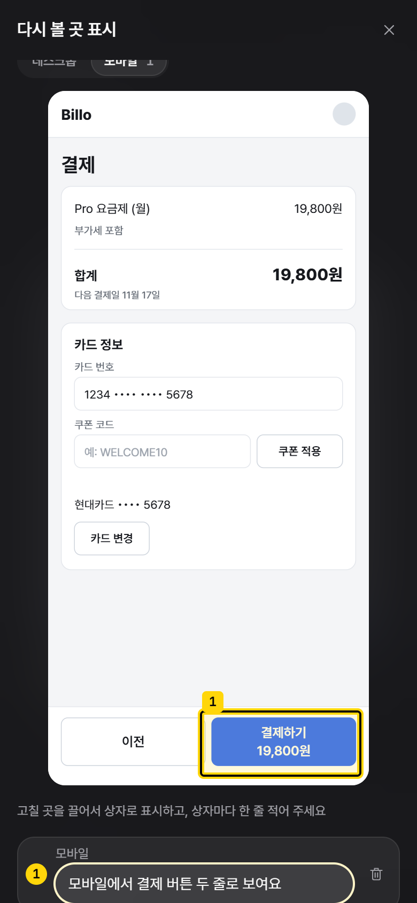
4요청자 시각 확인 & 상자 그려 피드백
코드를 못 보는 요청자가 main과 변경 화면을 나란히·슬라이더로 비교. 어색한 곳에 직접 네모 상자를 그려 '다시 봐 주세요'를 누르면 같은 브랜치에서 에이전트가 이어서 수정
-
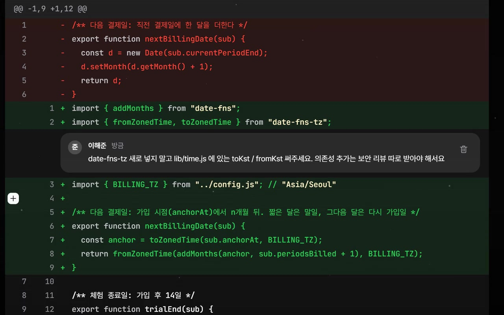
5줄 댓글로 다시 맡기기
diff 줄에 "date-fns-tz 새로 넣지 말고 lib/time.js 써주세요"라고 남기면 에이전트가 이어서 고치고 다시 검증
-
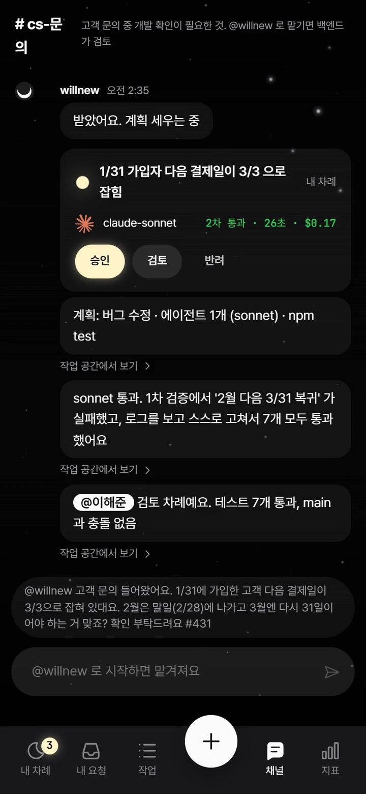
6검토 차례 알림 → 휴대폰 승인
통과하면 채널에서 담당 개발자를 부름("@이해준 검토 차례예요. 테스트 7개 통과, main과 충돌 없음"). 휴대폰에서 밀어서 승인
-
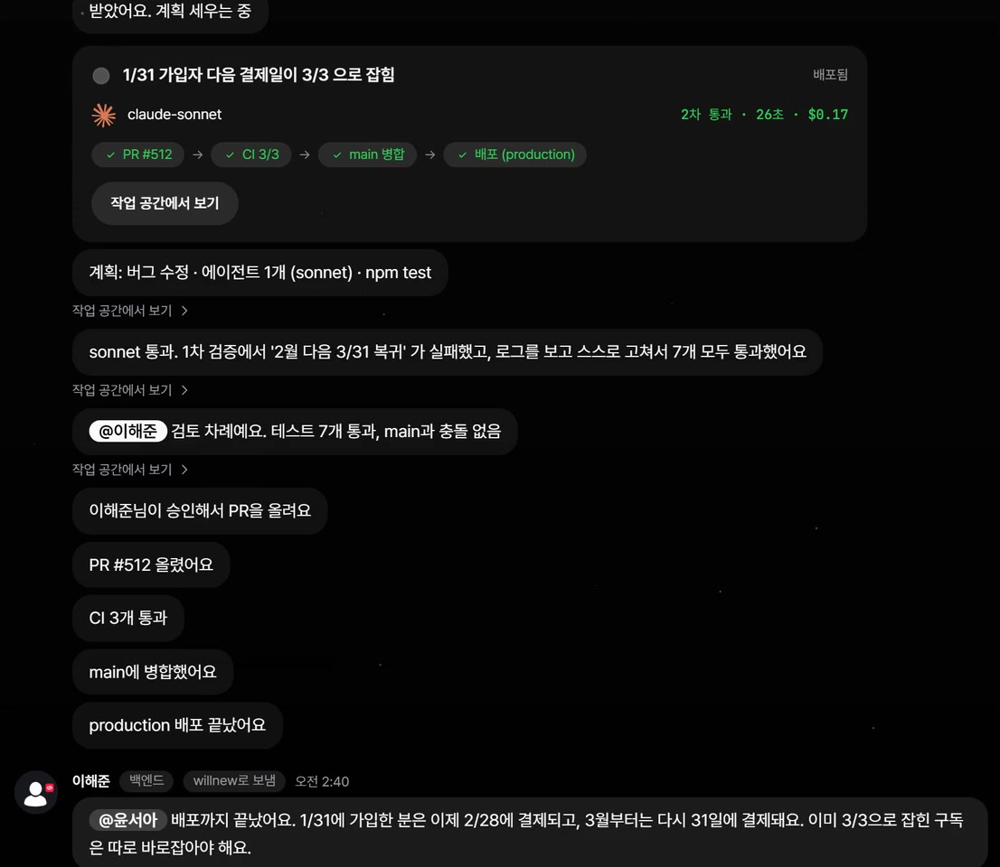
7승인 후 PR → CI → 배포 & 요청자 답장
PR 생성 → CI 3개 통과 → squash 병합 → production 배포까지 실시간 추적. 배포가 끝나면 승인한 개발자 이름으로 요청자에게 쉬운 말 답장
Claude Code를 직접 쓸 때와 다른 점
| Claude Code 직접 | willnew | |
|---|---|---|
| 끝났다는 판단 | 에이전트의 "다 고쳤어요"를 보고 사람이 테스트를 다시 돌림 | willnew가 검증 명령을 돌려 종료 코드로 판정 |
| 실패했을 때 | 사람이 로그를 복사해 다시 지시 | 로그를 붙여 한 번 자동 재작업 |
| 화면 검증 | 개발자가 직접 브라우저를 열어 확인 | Playwright 전후 화면 비교(슬라이더) & 상자 주석 피드백 |
| 테스트를 고쳐 통과 | diff를 끝까지 읽어야 발견 | 테스트 파일 변경을 표시하고 바로 승인을 막음 |
| main 충돌 | 병합할 때 발견 | 승인 전에 미리 확인 |
| 협업 방식 | Claude Code를 쓰는 개발자 1인의 작업 | 채널 카드 스레드로 비개발자 요청자와 개발자 협업 |
| 개발자가 하는 일 | 지시, 대기, 테스트, diff 확인 | 통과한 결과를 보고 승인만 |
| 병합 이후 | PR, CI, 배포를 따로 챙기고 요청자에게 직접 알림 | PR → CI → 배포를 이어서 하고 요청자에게 쉬운 말로 답장 |
| 토큰 비용 | 지시한 만큼 | 기본 에이전트 1개, 실패할 때만 1회 재작업. 두 에이전트 겨루기는 켰을 때만 |
Description
- 배경 고객 문의 같은 작은 버그도 개발자에게 넘어가 순서를 기다림. 에이전트에게 맡겨도 "끝났다"는 말만 믿고 병합할 수 없어 테스트를 다시 돌리고 diff와 화면을 직접 열어 봐야 하며, 끝나면 요청한 사람에게 따로 설명해야 함
- 구현
- 채널과 ⌘K 요청 → 계획 에이전트가 유형, 지시문, 검증 명령으로 변환 후 독립 카드 스레드 생성
- 격리된 Git 워크트리에서 Claude Code 실행. (선택 시 Codex와 겨루기 지원)
- Playwright 기반 Main vs 변경 워크트리 전후 화면 캡처(나란히 & 드래그 슬라이더) 제공. 요청자가 화면 위에 직접 사각형 상자를 그려 "다시 봐 주세요"를 누르면 같은 브랜치에서 에이전트가 2차 재작업 수행
- 역할(요청자, 개발자)과 채널별 검토자. 검증 통과 시 검토자를 호출하고, 승인 시 PR → CI → 병합 → 배포 확인 후 요청자 맞춤 쉬운 말 답장(`userNote`) 전달
- 진행 단계를 달이 차는 모양으로 표시. 보름달(사람이 결정할 차례)이 뜬 일만 '내 차례' 화면에 모음
- 검증
- 판정은 검증 명령 종료 코드. 테스트 파일을 고쳤거나 main과 충돌하면 검토 화면을 거쳐야 승인 가능
- 가짜 gh, 오프라인 에이전트, 스크린샷 모의 도구로 실행, 재작업, 스레드 분리, 요청자 확인 상태 전이, PR → CI → 배포까지 확인하는 테스트 94개 이상 통과
- 성과 실패 테스트 7개짜리 예제 저장소에 요청 3건 중 2건 병합(1건은 재작업 후 통과), 1건은 재작업 후에도 실패해 승인 차단, 총 $0.55. 실제 Claude Code 기준 맡기기부터 병합까지 약 47초
- 한계 현재는 단일 로컬 환경 실행 중심. 한 사람의 구독으로 팀원 요청을 처리하는 제약을 해결하기 위해 각 팀원 PC에서 분산 실행되는 허브-러너(Hub & Runner) 아키텍처 설계 중
화면 11개 보기 (스레드 & 전후 시각 비교 포함)

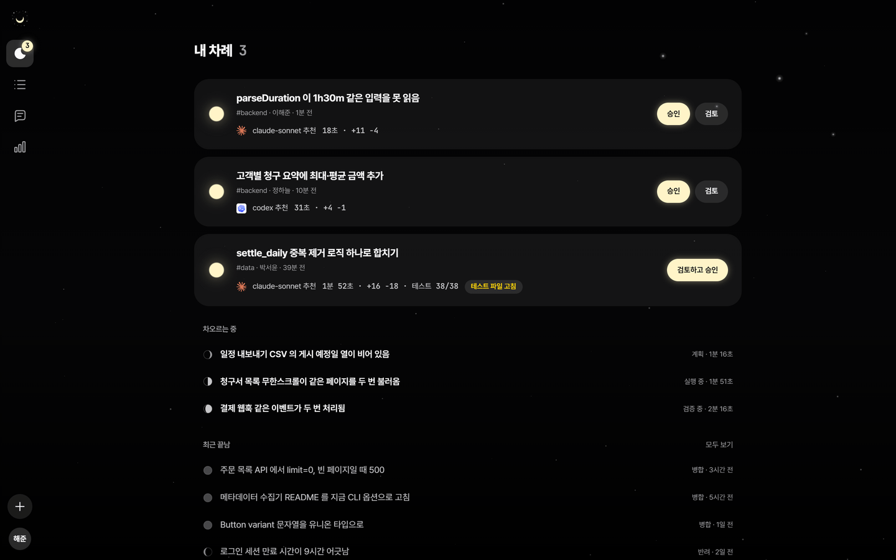

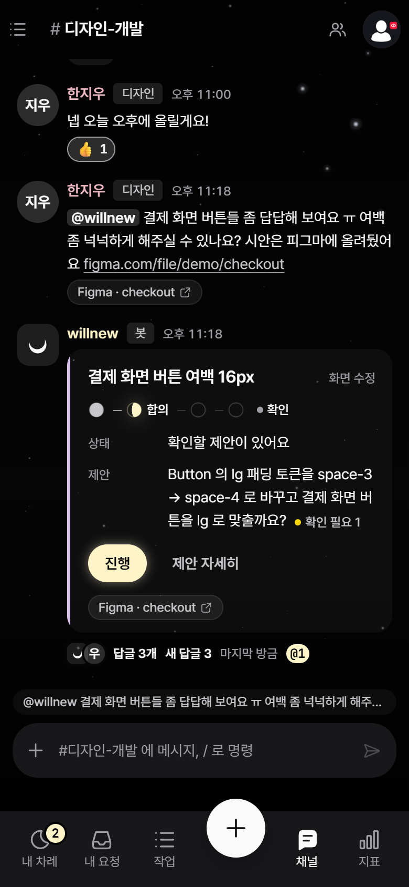

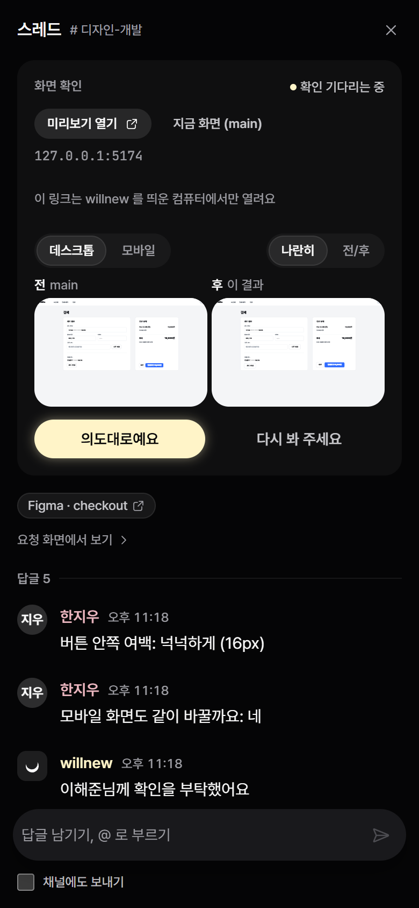


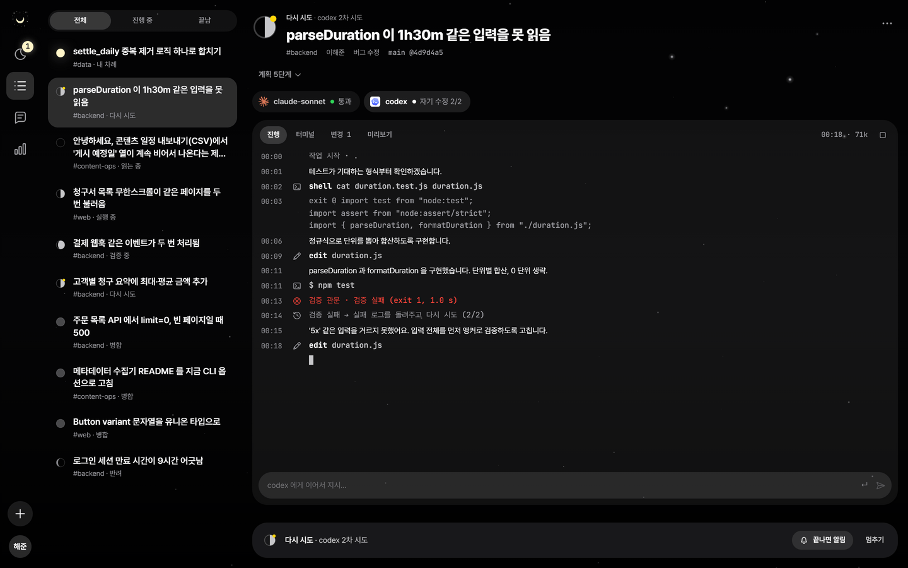

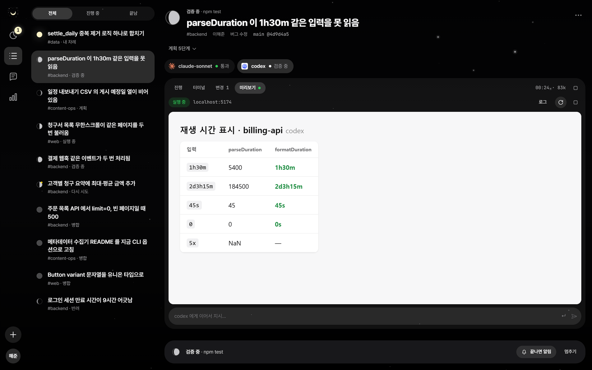

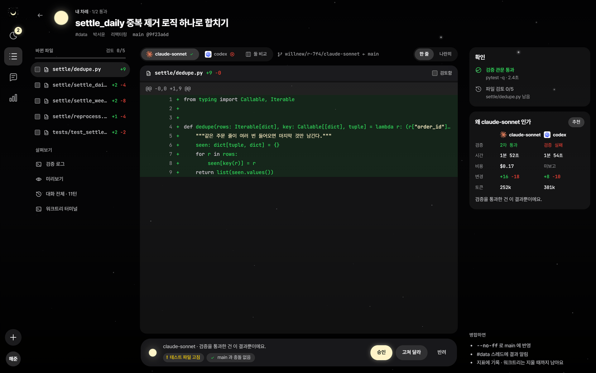

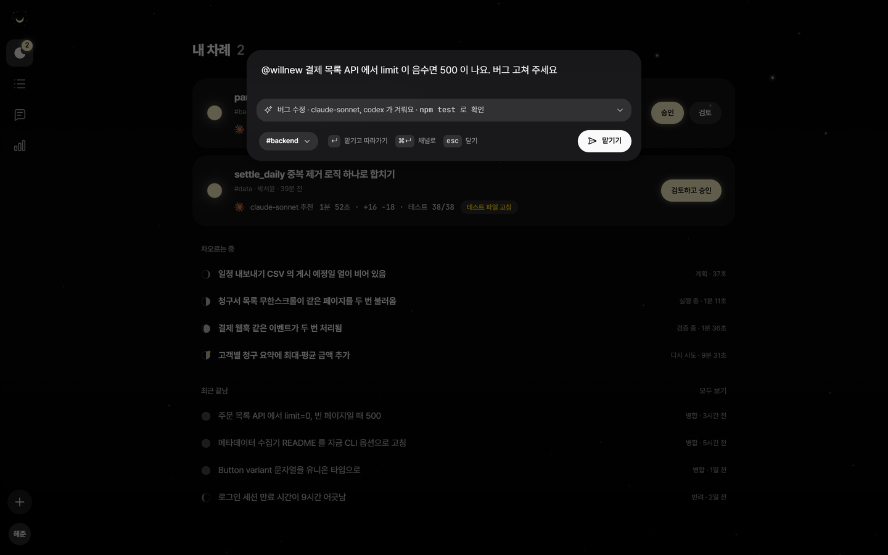

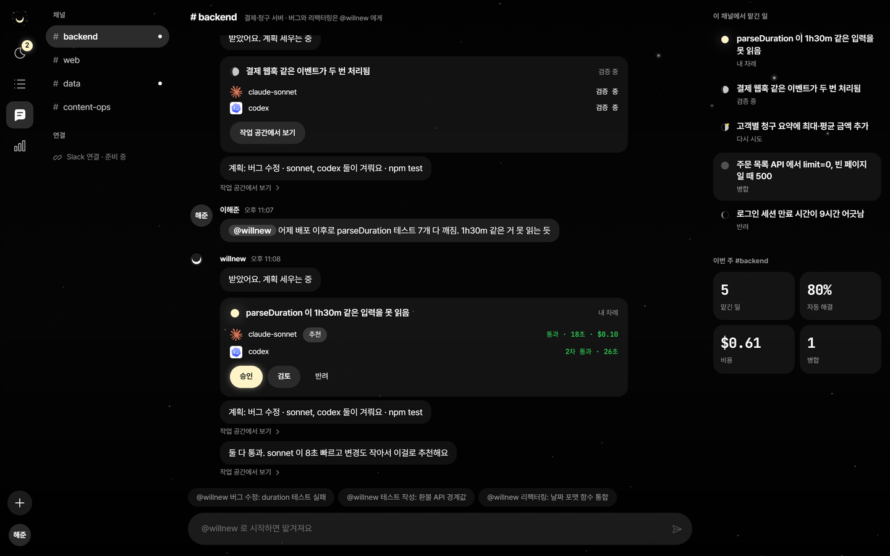

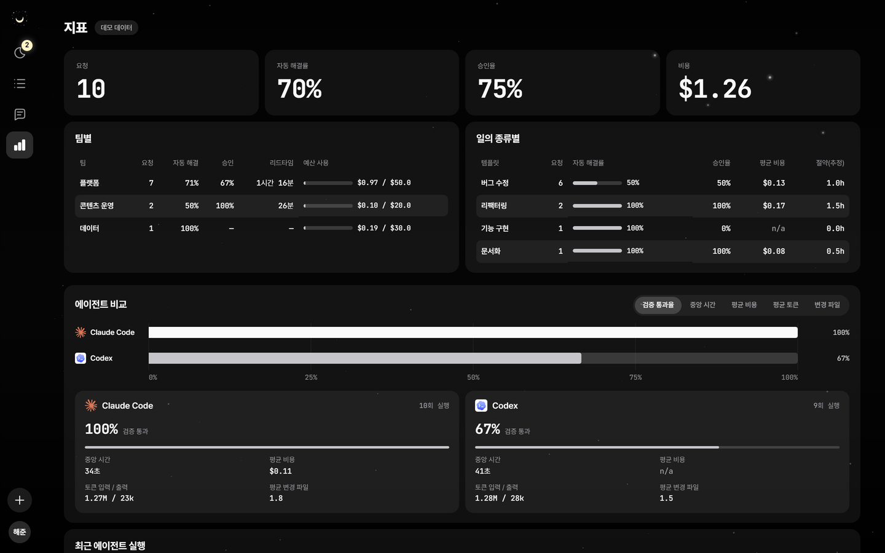

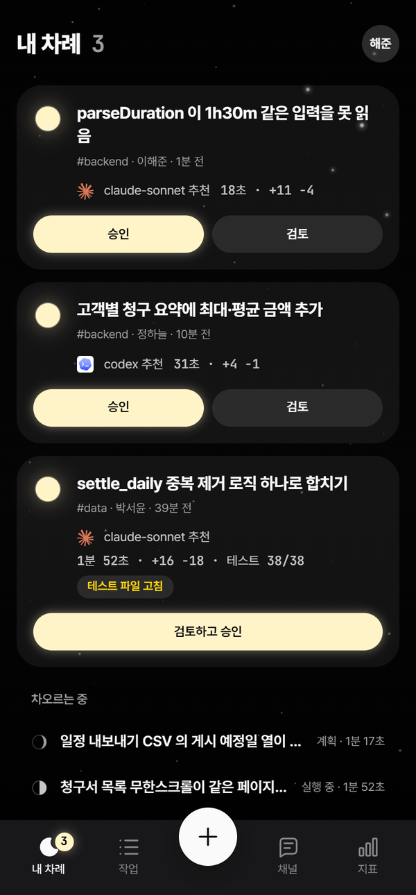
요청 3건 실측 상세 (2026.09.30)
Windows 11 · Claude Code 2.1 · Codex CLI 0.151. 예제 duration 저장소(실패 테스트 7개)에서 시작한 소규모 실측. 화면은 데모 모드에서 촬영
2026.10.12 새 화면으로 실제 Claude Code를 돌려 다시 확인: 요청 1건, 맡기기부터 병합까지 약 47초.
| 요청 | 계획 | 실행 | 결과 |
|---|---|---|---|
| #backend 버그 수정 | 24.8초, $0.02 | Sonnet 19초, $0.10 / Codex 45초 | 둘 다 첫 검증 통과 → Sonnet 승인 → 병합 |
| #data 테스트 작성 | 15.5초, $0.02 | Sonnet 37초, $0.20 | 첫 검증 실패 → 재작업 후 통과 → 승인 |
| #content-ops 문서화 | 23.1초, $0.02 | Sonnet 33초, $0.19 | 재작업 후에도 실패 → 반려 |
절약 시간은 템플릿 가정치(실측값 아님)